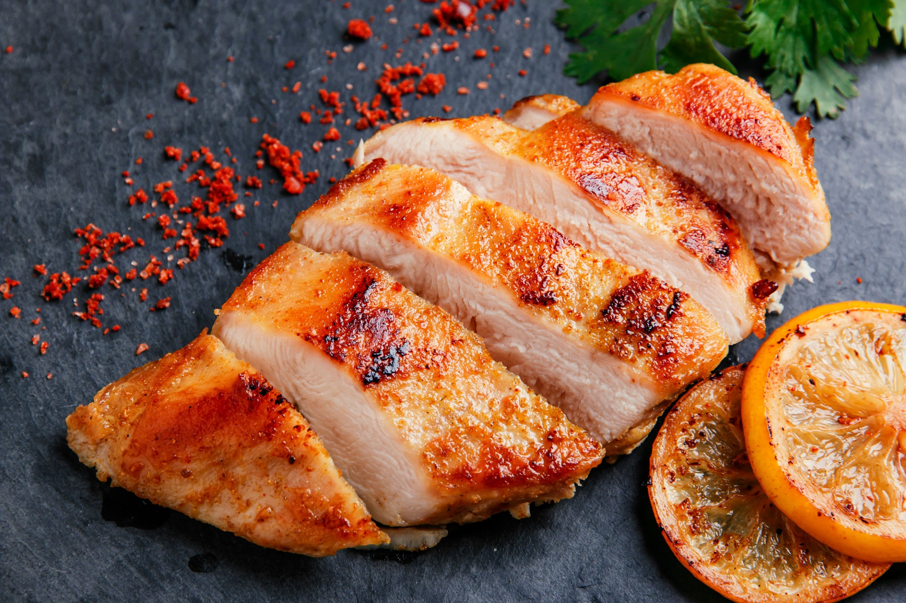
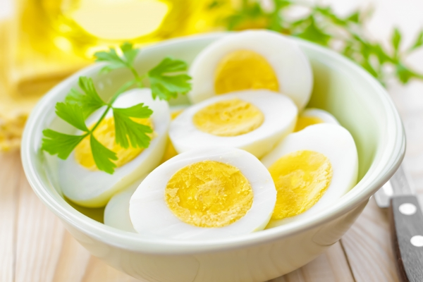
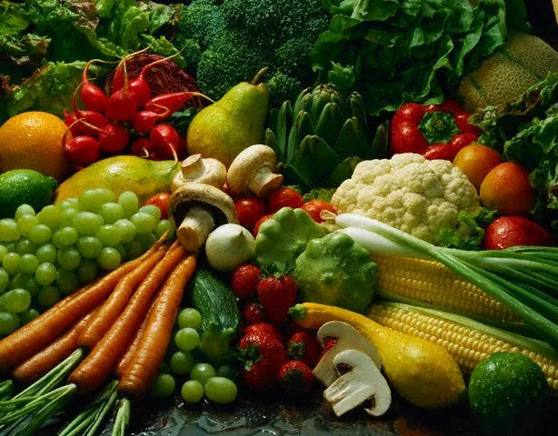
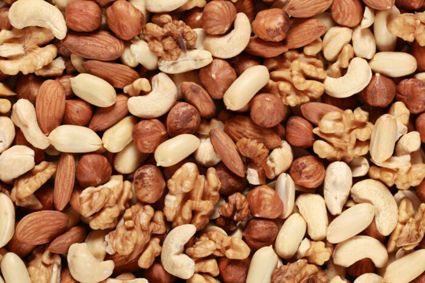
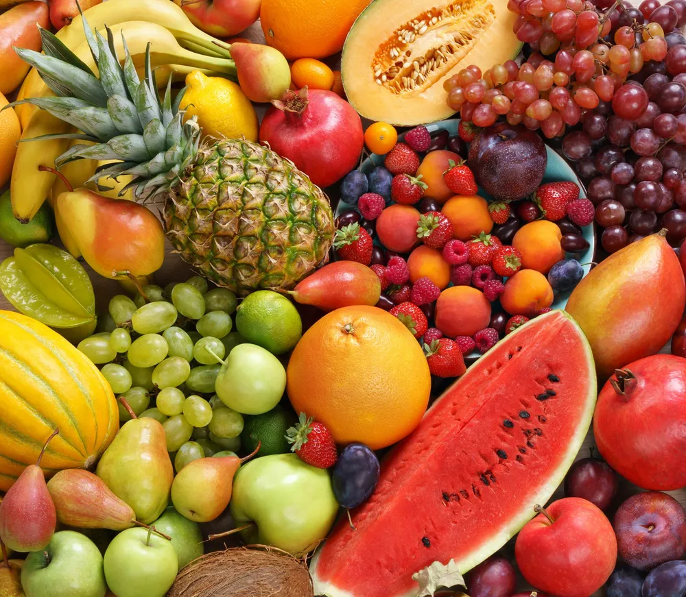

닭가슴살
닭가슴살은 저지방이면서 단백질이 풍부하여 다이어트 식단에
적합합니다. 그린이나 오븐에서 조리하여 먹을 수 있습니다.

계란
계란은 단백질이 풍부하고 다양한 영양소를 함유한 식품입니다.
달걀 흰자만 또는 노른자를 섞어 섭취하는것도 좋은 방법입니다.

채소
채소는 칼로리가 낮으면서 영양소가 풍부한 식품입니다
녹색채소(시금치,케일,브로콜리)와 같은 다양한 색상의 채소
(당근,토마토,파프리카)를 다양하게 섭취하는것이 좋습니다.

견과류
적정량의 견과류는 단백질, 좋은지방, 식이섬유를 공급하여
포만감을 높이고 영양소를 공급합니다. 아몬드,호두,캐슈너트
등이 있습니다.

과일
과일은 자연스러운 당분과 영양소가 풍부하여 건강한 간식으로
매우 좋습니다. 사과,딸기,블루베리,오렌지 등이 있습니다.